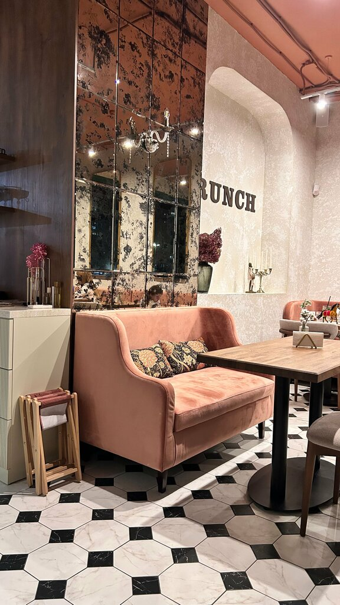

Место для встреч, кофе и спокойных пауз
В Brunch приходят за кофе, десертами, спокойной работой у окна и встречами, которые не хочется сокращать.



Пудровый зал, цветы и мягкий свет
Внутри - фактурные светлые стены, мягкие кресла, букеты на столах и теплый свет люстр. Здесь легко сесть у окна, заказать кофе и никуда не спешить.
- столики у окна
- живые букеты
- мягкие кресла
- теплый свет
Для подруг, свиданий, цветов и десертов
Brunch подходит для неспешной встречи, красивого кофе, десерта после прогулки и вечера в мягкой уютной атмосфере.
Гости отмечают еду, атмосферу и интерьер
Вкуснуая еда, уютный зал, красивая подача и внимательное обслуживание.
"Кофе стабильно хороший, сотрудники дружелюбные."
Денис, отзыв на Яндекс Картах
"Уютненький интерьер, классное меню, очень вкусно и адекватные цены."
Екатерина, отзыв на Яндекс Картах
"Очень красивое место. Вкусно, в красивой посуде."
Мария, отзыв на Яндекс Картах
Brunch на Войстроченко, 5
Кафе работает каждый день с 09:00 до 22:00. Можно позвонить, построить маршрут или зайти за кофе с собой.